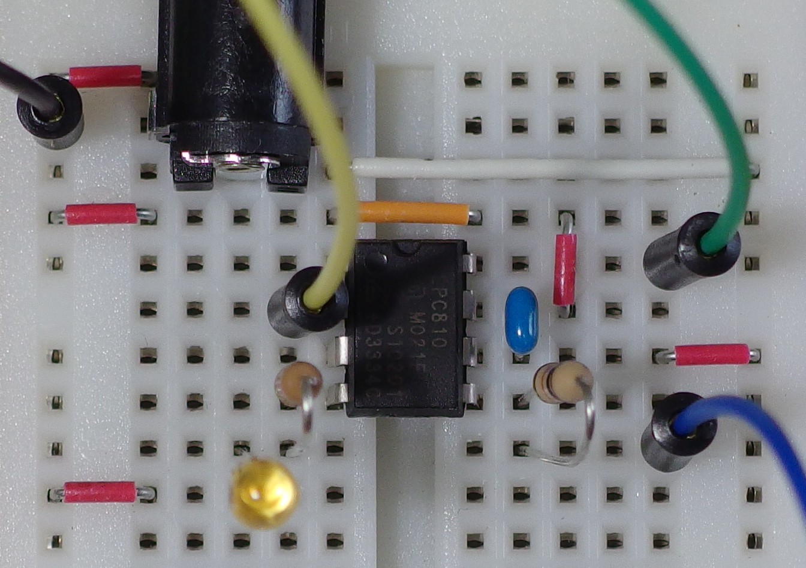

Transmit characters.
Hardware


Software
001:
002:
003:
004: <yoshida@mpc.net>
005:
006:
007:
008:
009:
010:
011:
012:
013:
014:
015:
016:
017: <http://www.gnu.org/licenses/>
018:
019:
020: #include <syscon.h>
021: #include <gpio.h>
022: #include <usart.h>
023:
024: volatile int dont_delete_loop;
025:
026:
027: #define U_PCLK (16 * 115200)
028:
029:
030: static void clock_setup(void)
031: {
032:
033: syscon_enable_pll(SYSCON_IRC, 2, 4);
034:
035:
036: syscon_set_system_clock(SYSCON_PLL_OUT, 1);
037:
038:
039: syscon_set_usart_clock(24000000, U_PCLK);
040: }
041:
042: static void gpio_setup(void)
043: {
044:
045:
046:
047:
048:
049:
050:
051: syscon_enable_clock(SYSCON_IOCON);
052:
053:
054: gpio_config(GPIO_OUTPUT, GPIO_IO, PIO0_10 | PIO0_11);
055: gpio_clear(PIO0_10 | PIO0_11);
056:
057:
058: gpio_config(GPIO_OUTPUT, 0, PIO0_2);
059:
060:
061: gpio_config(GPIO_U0_TXD, GPIO_HYST, PIO0_4);
062: }
063:
064: static void usart_setup(void)
065: {
066:
067: syscon_enable_clock(SYSCON_UART0);
068:
069:
070: usart_init(USART0, U_PCLK, 9600, 8, 1, USART_PARITY_NONE,
071: USART_FLOW_NONE);
072: }
073:
074: int main(void)
075: {
076: char c = '0';
077: int n = 0;
078: int i;
079:
080: clock_setup();
081: gpio_setup();
082: usart_setup();
083:
084:
085:
086: while (1) {
087:
088: gpio_toggle(PIO0_2);
089:
090:
091: usart_send_blocking(USART0, c++);
092: if (c > '9')
093: c = '0';
094:
095:
096: if (++n >= 80) {
097: usart_send_blocking(USART0, '\r');
098: usart_send_blocking(USART0, '\n');
099: n = 0;
100: }
101:
102:
103: for (i = 0; i < 1000000; i++)
104: dont_delete_loop;
105: }
106:
107: return 0;
108: }
109:
{kind=link}